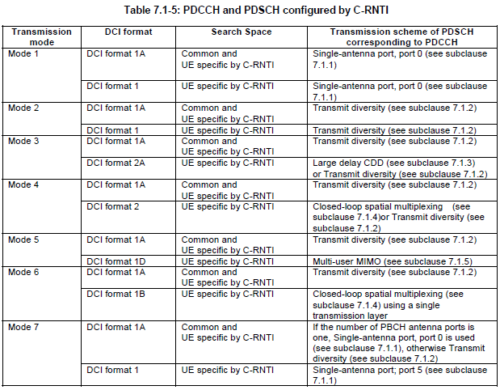
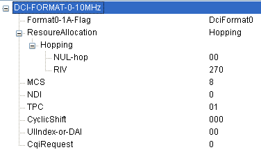

|
DCI Home : www.sharetechnote.com |
|
When you study the physical frame structure of LTE, you may be impressed by flexibility (meaning complexity in other way) of all the possible ways of resource allocation. It was combination of Time Domain, Frequency Domain and the modulation scheme. Especially in frequency domain, you have so many resource blocks you can use (100 Resource Blocks in case of 20 Mhz Bandwidth) and if you think of all the possible permutation of these variables, the number will be very huge. Then you would have this question (At least I had this question).. How can the other party (the recieving side) can figure out exactly where in the slot and in which modulation scheme that the sender (transmitter) transmit the data(subframe)? I just captured the physical signal but how can I (the reciever) decode this signal. This is where the term called 'DCI(Downlink Control Indicator)' comes in.
It is DCI which carries those detailed information like "which resource block carries your data ?" and "what kind of demodulation scheme you have to use to decode data ?" and some other additional information. It means you (the reciever) first have to decode DCI and based on the information you got from the DCI you can decode the real data. It means without DCI, decoding the data delivered to you is impossible. Not only in LTE, but also in most of wireless communication the reciever requires special information structure like DCI. For example, in WCDMA R99, Slot format and TFCI carries those information and in HSDPA HS-SCCH carried those information and in HSUPA E-TFCI carries it.
In terms of protocol implementation with respect to carrying these information, R99 seems to be the most complicated one. You had to define all the possible combination of resource allocation in the form of TFCS (a kind of look-up table for TFCI) and you have to convey those information through L3 message (e.g, Radio Bearer Setup message and RRC Connection Setup message) and the transmitter also have to configure itself according to the table. A lot of error meaning headache came from the mismatches between the TFCS information you configured in L3 message and the configuration the transmitter applied to itself (transmitter's lower layer configuration). It has been too much headache to me. HSDPA relieved the headache a lot since it carries these information directly on HS-SCCH and this job is done by MAC layer. The resource allocation information carried by HS-SCCH is called 'TFRI'. So I don't have to care much about L3 message.. but still I need to jump around the multiple different 3GPP document to define any meaningful TFRIs. And other complication was that even in HSDPA we still using R99 DPCH for power control and signaling purpose, so I cannot completely remove the headache of handling TFCS.Now in LTE, this information is carried by DCI as I explained above and we only have to care about just a couple of parameters like Number of RBs, the starting point of RBs and the modulation scheme and I don't have to care anything about configuring these things in RRC messages. This is a kind of blessing to me.
As one example showing how/when DCI is used, refer to http://jaekuryu.blogspot.com/2010/01/lte-signalinig-essentials.html section "Uplink Data Transmission Scheduling - Persistent Scheduling"
Types of DCIs
DCI carries the following information : i) UL resource allocation (persistent and non-persistent) ii) Descriptions about DL data transmitted to the UE.
L1 signaling is done by DCI and Up to 8 DCIs can be configured in the PDCCH. These DCIs can have 6 formats : 1 format for UL scheduling, 2 formats for Non-MIMO DL scheduling, 1 format for MIMO DL Scheduling and 2 formats for UL power control.
DCI has various formats for the information sent to define resource allocations. The DCI formats defined in LTE are as follows.
L1 signaling is done by DCI and Up to 8 DCIs can be configured in the PDCCH. These DCIs can have 6 formats : 1 format for UL scheduling, 2 formats for Non-MIMO DL scheduling, 1 format for MIMO DL Scheduling and 2 formats for UL power control. DCI has various formats for the information sent to define resource allocations. The resource allocation information
What kind of information is carreid by each DCI ?
The best way to understand this in very detail is to take one example of each of DCI bit string and decode manually based on 3GPP specification. But this section can be a good summary for quick reference. And the DCI decode examples at the end of this page would give you a good/detailed picture of DCI strutures.
Type 0 : A bitmap indicating the resource block groups(RBGs) that are allocated to the scheduled UE. (An RBG is a set of consecutive physical resource blocks(PRBs). This type has following informations
Type 1 : A bitmap indicating PRBs from a set of PRBs from a subset of resource block groups determined by the system bandwidth.
Type 2 : A set of contiguously allocated physical or virtual resource blocks. The allocations vary from a single PRB upto the maximum number of PRBs spanning the system bandwidth.
What determines a DCI Format for the specific situation ?
There are two major factors to determine a DCI format for a specific situation as follows : i) RNTI Type ii) Transmission Mode
This means that you cannot change only one of these parameters arbitrarily and you always have to think of the relationships among these when you change one of these parameters. Otherwise you will spend a long time for troubleshooting -:)
Those tables from 3GPP 36.213 shows the relationships between RNTI Type, Transmission Mode and DCI format. (You would notice that same information (same RNTI type) can have multiple candidates of DCI format. Then, the question is "How network determine which DCI format it has to use at a specific moment ?". In some case, you can find a clear criteria from following table, but some other case the selection criteria is not clear. For example, if you ask "Do I have to use DCI format 1A or 2A when I am using TM3, C-RNTI ?". You may say "Use DCI format 2A in MIMO configuration and use 1 A in non-MIMO configuration". But the answer would not be clear if you ask "What kind of DCI format (1A or 1C) for Paging message (P-RNTI) ?". At least table 7.1-2 does now show any different selection criteria and I haven't found anywhere else in the spec about this selection criteria. In this case, I just ask to several other people who is working on that specific area and trying to draw conclusion by a kind of 'vote'. For this specific case (DCI format for P-RNTI), I got the response saying "There is no clear criteria, it is just upto network on which one to pick".)

Any relations between DCI format and Layer 3 signaling message ?
Yes, there is a relationship. You have to know which DCI format is required for which RRC message. Following tables from 3GPP 36.321 shows the relationship between RNTI and logical channel and you would know which RRC message is carried by which logical channel. So with two step induction, you will figure out the link between RRC message and it's corresponding DCI format.
For example, if you see the "Security Mode Command" message of section 6.2.2 of 36.331, it says
Signalling radio bearer: SRB1 RLC-SAP: AM Logical channel: DCCH Direction: UE to E-UTRAN
If you see the table, you would see this message is using C-RNTI. and you will figure out the possible candiates from table 7.1-5 of 36.213 and if you would have detailed information of the transmission mode, you can pinpoint out exactly which DCI format you have to use for this message for a specific case. Assuming TM mode in this case is TM1 and scheduling is dynamic scheduling, if you see Table 7.1-2 you will figure out that this is using C-RNTI. With this RNTI Type and TM mode, if you see table 7.1-5, this case use DCI Format 1 or DCI Format 1A.
Channel Coding Process for DCI
It is a little complicated to describe this process here. (To be honest, I don't know how to explain this process in plain language). Please see 5.3.3.1 DCI formats of 36.212
DCI 0 - Examples
Example 1 > DCIFormat 0, value = 0x2584A800
You can figure out the Start of RB and N_RB (Number of allocated RB) from RIV value.
How can I calcuate Start_RB and N_RB from RIV. The simple calcuation is as
follows :
Example 2 > DCIFormat 0, value = 0x48720800
This examples shows the case where PUSCH frequency hopping flag is on. Depending on the value for NUL-hop, the detailed hopping pattern is determined.

When the system band frequency is 1.4M, 3M, 5M, Type PUSCH hopping is decided by below method.
"NUL-hop" = 0 --- Type1 "NUL-hop" = 1 --- Type2
When the system band frequency is 10M, 15M, 20M, Type PUSCH hopping is decided by below method.
"NUL-hop" = 0 --- Type1 "NUL-hop" = 1 --- Type1 "NUL-hop" = 2 --- Type1 "NUL-hop" = 3 --- Type2
Example 3 > DCIFormat 0, value = 0x07D7E800
This example shows you a case with UL HARQ retransmission. If you see the MCS value, it says 31 which is set as RVidx 3 in Table 8.6.1-1 of 36.213.
DCI 1 - Examples
Example 1 > DCIFormat 1A, value = 0x84B3C040 Example 2 > DCIFormat 1A, value = 0xC4B3C140
DCI 2 - Examples
Example 1 > DCIFormat 2A, value = 0x080005C08080
|